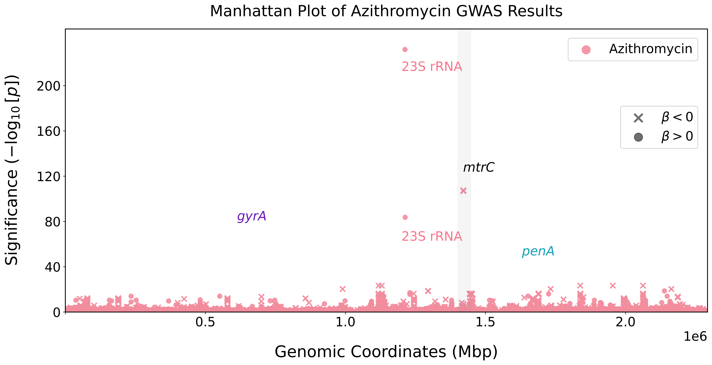

# prepare_pyseer_inputs.py
import pandas as pd
# Load metadata
meta_path = "data/gwas-strain-table-filtered.tsv"
metadata = pd.read_csv(meta_path, sep="\t")
# Keep relevant fields and drop missing values
metadata = metadata[["GWAS_ID", "AZI_LOG", "Country"]].dropna()
# Save phenotype file
metadata[["GWAS_ID", "AZI_LOG"]].to_csv("data/phenotypes.tsv", sep="\t", index=False)
# One-hot encode Country for fixed effects
covariates = pd.get_dummies(metadata[["GWAS_ID", "Country"]], columns=["Country"])
covariates.to_csv("data/covariates.tsv", sep="\t", index=False)Replication
This analysis replicates a portion of the genomic association approach used in the paper “Adaptation to the cervical environment is associated with increased antibiotic susceptibility in Neisseria gonorrhoeae”. While the original study examines susceptibility to azithromycin, ceftriaxone, and ciprofloxacin, we apply the same GWAS methodology to focus only on susceptibility to azithromycin.
This analysis is carried out through a series of interconnected scripts, each performing a distinct step in the GWAS pipeline. These include:
Pre-processing metadata
Running Pyseer with fixed effects and phylogeny correction
Annotating significant unitigs, by mapping them to a reference genome
Generating Manhattan plots to visualize significant associations
Data Sources
- Metadata: The file gwas-strain-table-filtered.tsv contains cleaned metadata for each N. gonorrhoeae strain. It includes the log-transformed minimum inhibitory concentration (MIC) values for azithromycin (AZI_LOG), ceftriaxone (CRO_LOG), and ciprofloxacin (CIP_LOG), the strain identifier (GWAS_ID), and country of origin.
- Unitigs: The unitigs.txt file lists presence/absence of unitigs in sparse format.
- Phylogenetic Similarity Matrix: The combined_phylogeny_similarity.tsv file provides a pairwise similarity matrix based on phylogenetic distance between strains, necessary for population structure correction. This was generated using phylogeny_distance.py from the Pyseer toolkit.
All files are pre-processed and aligned so that strain IDs match across metadata, phenotype, and matrix inputs.
Step 1: Preprocessing Metadata and Covariates
Before running the GWAS, we need to format the input data so that Pyseer can correctly associate phenotype values (azithromycin susceptibility) with each strain and control for confounding by geographic origin.
The following script (prepare_pyseer_inputs.py) should be executed as a standalone Python script. It processes raw metadata and outputs two essential files required by Pyseer: a phenotype file and a covariate matrix with one-hot encoded country indicators.
This script creates:
data/phenotypes.tsv: Contains strain IDs and azithromycin MICsdata/covariates.tsv: Fixed-effect dummy variables for country of origin
Step 2: Running Pyseer GWAS
Once the input files are prepared, we run the core GWAS using Pyseer. This step tests the association between unitig presence and azithromycin susceptibility, while accounting for both population structure and fixed effects.
This is a shell script (run_pyseer.sh) and should be run from the command line (e.g. in our terminal or via SLURM job scheduler). Ensure all input paths are correct before executing.
#| eval: false
# run_pyseer.sh
pyseer \
--phenotypes data/phenotypes.tsv \
--kmers data/unitigs.txt \
--uncompressed \
--distances data/combined_phylogeny_similarity.tsv \
--covariates data/covariates.tsv \
--cpu 4 \
> results/pyseer_results.txtThis will produce the raw GWAS output in results/pyseer_results.txt.
Step 4: Unitigs Annotation
As part of this replication, we did not perform de novo annotation of the unitigs produced by our Pyseer GWAS. Instead, to facilitate plotting and comparison with the original study, we used pre-annotated output files from the original authors—specifically, the pyseer-AZI-cond-country.results.mapped-WHO_F.plot file—available in their published results directory.
In the full Pyseer pipeline, unitig annotation is a key downstream step that maps statistically significant unitigs to a reference genome (e.g., Neisseria gonorrhoeae WHO_F) and provides them with gene-based or functional context. This step typically involves:
Sorting the
.results.txtoutput by p-valueMapping unitigs to a reference FASTA genome using
phandango_mapperIdentifying significant hits using a Bonferroni threshold (calculated from the number of tested patterns)
Annotating those hits with
annotate_hits_pyseer, which uses a formatted reference genome description (e.g., reference_WHO_F.txt)Producing GFF-aligned files for further interpretation and visualization
To streamline this replication, we borrowed this component from the original study’s annotation pipeline, prioritizing the replication of the GWAS logic and structure. Future work could integrate this annotation pipeline. While we did not reimplement every detail of the original pipeline, portions of the annotation and plotting stages were adapted to reflect the study’s approach.
Step 5: Plotting Manhattan Plot
To visualize the GWAS results, we can generate a Manhattan plot, which highlights genomic regions where unitigs show statistically significant associations with azithromycin susceptibility.
The following script (plots.py) is a standalone Python script. It visualizes significant associations using a Manhattan plot and highlights known resistance loci. Run this in an environment with matplotlib, numpy, and pandas installed.
# plots.py
import pandas as pd
import numpy as np
import matplotlib.pyplot as plt
from matplotlib.patches import Rectangle
# Load mapped and filtered GWAS results
azi = pd.read_csv('results/pyseer-AZI-cond-country.results.mapped-WHO_F.plot', sep='\t')
azi = azi.sort_values('log10(p)', ascending=False)
azi['Pos'] = azi['minLOG10(P)'].apply(lambda x: int(x.split('..')[0]))
azi = azi[azi['af'] <= 0.5]
# Setup
plt.figure(figsize=(18,8), dpi=300)
plt.scatter('Pos', 'log10(p)', data=azi[azi['beta'] > 0].head(1_00_000), s=50, alpha=0.9, color='#f28d9e', label='Beta > 0')
plt.scatter('Pos', 'log10(p)', data=azi[azi['beta'] < 0].head(1_00_000), s=70, marker='x', color='#f28d9e', label='Beta < 0', linewidth=2)
# Annotate known resistance genes
plt.annotate(r'23S rRNA', (1.2e6, 213), color='#f7768d')
plt.annotate(r'$\mathit{mtrC}$', (1.42e6, 124), color='black')
plt.gca().add_patch(Rectangle((1.4e6, 0), 4.9e4, 250, color='#7d7d7d', alpha=0.075))
# Axes and legend
plt.xlabel('Genomic Coordinates (Mbp)')
plt.ylabel(r'Significance ($-\log_{10}[p]$)')
plt.legend()
plt.xlim(0, 2292467)
plt.ylim(0, 250)
plt.title('Manhattan Plot of Azithromycin GWAS Results', fontsize=24, pad=20)
plt.savefig('results/combined-manhattan-plot.png', bbox_inches='tight', dpi=600)See output below:

This replication process involved adapting the Pyseer GWAS framework to test azithromycin susceptibility in Neisseria gonorrhoeae. By reproducing key components of the original study and customizing the phenotype and covariate inputs, we gained experience with bacterial GWAS using unitigs and developed proficiency with tools such as the Pyseer package. The resulting visualizations highlight significant associations, including known resistance loci such as mtrC.